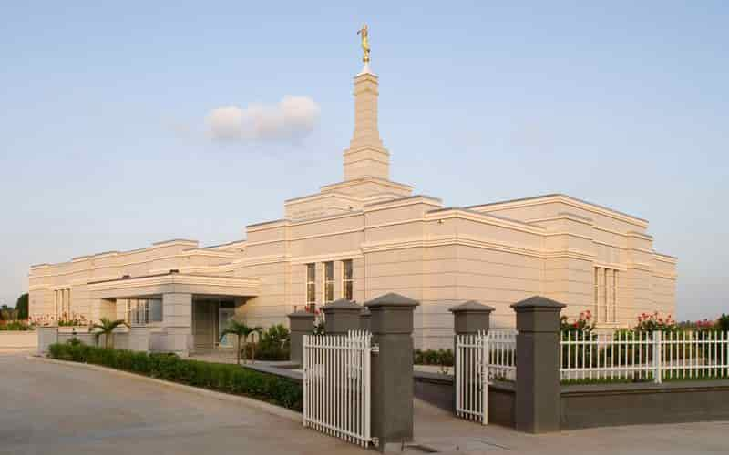

Temple Album
Home
Old
New
Large
Small
Dedicated Temples

Aba Nigeria Temple
Accra Ghana Temple
Johannesburg Temple
Salt Lake Temple
Nauvoo Temple
Paris France Temple
Tokyo Japan Temple
Rome Italy Temple
Durban Temple